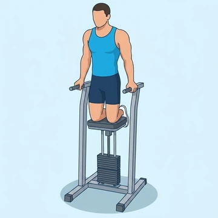
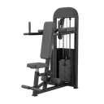

Machine Assisted Dips
A beginner-friendly dip performed on an assisted machine that offsets body weight, training the chest and triceps.
Upper arms · Dip Machine · Beginner


Muscles worked by the Machine Assisted Dips
Primary
Secondary
Also called: pec, pecs, pectoralis major, pectoralis, chest muscles, tricep.
Equipment

Dip MachineAlso called: seated dip machine, tricep dip machine, chest dip machine, seated dip, assisted dip machine.
How to do the Machine Assisted Dips
- Step onto the assisted dip machine with knees on the pad.
- Grip the parallel bars and support your weight with straight arms.
- Lower your body by bending your elbows until shoulders are below elbows.
- Press back up to the start position.
- Repeat for the desired number of reps.
Form tips
- Keep your elbows tracking back rather than flaring out wide.
- Stop the descent if you feel pinching in the shoulders.
- Reduce the assistance gradually as pressing strength improves.
At a glance
| Body part | Upper arms |
|---|---|
| Category | Strength |
| Force type | Push |
| Mechanic | Compound |
| Difficulty | Beginner |
| Equipment | Dip Machine |
| Goals | Hypertrophy, Strength |
| Tags | Knee safe, No axial load, Lower back safe |
| MET | 6.0 (metabolic equivalent, for calorie estimates) |
| Unilateral | No |
| Bodyweight | No |
| Dataset id | assisted-dips |
Machine Assisted Dips in German & Spanish
| German | Dips an der Assistenzmaschine |
|---|---|
| Spanish | Fondos en Máquina Asistida |
Descriptions, instructions and tips ship in all three languages in the JSON.
Related exercises
Exercise data (JSON)
The record below is exactly what exercises.json ships for this exercise — names, descriptions, instructions and tips in English, German and Spanish.
{
"id": "assisted-dips",
"name_en": "Machine Assisted Dips",
"name_de": "Dips an der Assistenzmaschine",
"name_es": "Fondos en Máquina Asistida",
"description_en": "A beginner-friendly dip performed on an assisted machine that offsets body weight, training the chest and triceps.",
"description_de": "Eine Dip-Variante an der Maschine, die einen Teil des Körpergewichts abnimmt und so den Einstieg erleichtert.",
"description_es": "Un ejercicio de fondos en máquina asistida que descarga parte del peso corporal para fortalecer pecho y tríceps.",
"category": "strength",
"force_type": "push",
"mechanic": "compound",
"difficulty": "beginner",
"equipment": "dip_machine",
"body_part": "upper_arms",
"primary_muscles": [
"pectoralis_major",
"triceps_brachii"
],
"secondary_muscles": [
"anterior_deltoid",
"rhomboids"
],
"goals": [
"hypertrophy",
"strength"
],
"tags": [
"knee_safe",
"no_axial_load",
"lower_back_safe"
],
"variation_group": "dips",
"is_unilateral": false,
"is_bodyweight": false,
"instructions_en": [
"Step onto the assisted dip machine with knees on the pad.",
"Grip the parallel bars and support your weight with straight arms.",
"Lower your body by bending your elbows until shoulders are below elbows.",
"Press back up to the start position.",
"Repeat for the desired number of reps."
],
"instructions_de": [
"Knie auf dem Polster der Dip-Assistenzmaschine.",
"Greife die parallelen Griffe und stütze dein Gewicht auf gestreckten Armen.",
"Senke den Körper, indem du die Ellbogen beugst, bis die Schultern unter den Ellbogen sind.",
"Drücke zurück in die Ausgangsposition.",
"Wiederhole die gewünschte Anzahl von Wiederholungen."
],
"instructions_es": [
"Sube a la máquina de fondos asistidos con las rodillas en el pad.",
"Agarra las barras paralelas y soporta tu peso con los brazos extendidos.",
"Baja el cuerpo flexionando los codos hasta que los hombros queden por debajo de los codos.",
"Empuja de vuelta a la posición inicial.",
"Repite el número de repeticiones deseado."
],
"tips_en": [
"Keep your elbows tracking back rather than flaring out wide.",
"Stop the descent if you feel pinching in the shoulders.",
"Reduce the assistance gradually as pressing strength improves."
],
"tips_de": [
"Halte die Ellbogen nah am Körper, statt sie nach außen ausweichen zu lassen.",
"Senke dich nur so tief ab, wie es deine Schultern schmerzfrei zulassen.",
"Reduziere die Unterstützung schrittweise, sobald alle Wiederholungen sauber gelingen."
],
"tips_es": [
"Baja de forma controlada, sin rebotar en la parte inferior.",
"Mantén los hombros alejados de las orejas durante todo el recorrido.",
"Reduce la asistencia de forma gradual a medida que ganes fuerza."
],
"met": 6.0,
"images": {
"flat": {
"start": "images/flat/assisted-dips-start.webp",
"peak": "images/flat/assisted-dips-peak.webp"
}
}
}Fetch just this exercise
const { exercises } = await fetch(
"https://exercise-dataset.com/exercises.json"
).then(r => r.json());
const ex = exercises.find(e => e.id === "assisted-dips");Free for personal and commercial in-app use with attribution (“Exercise data by RepDB”) — see the license and ready-made attribution snippets. Redistributing the data as a dataset or API is not permitted.